Lam Research / 优先权 2019-10-04 / 本版公开 2025-03-04US12241173B2Wafer shielding for prevention of lipseal plate-out公开专利资料专利文件 · 22 页正文明确举 SABRE 3D 为适用设备；简化腔体和成对工位架构。适用边界：适用设备举例，不是某一出厂配置的全套总装图。Fig.9 的 911 是离子阻性可透液元件，不是阴阳极液分隔膜。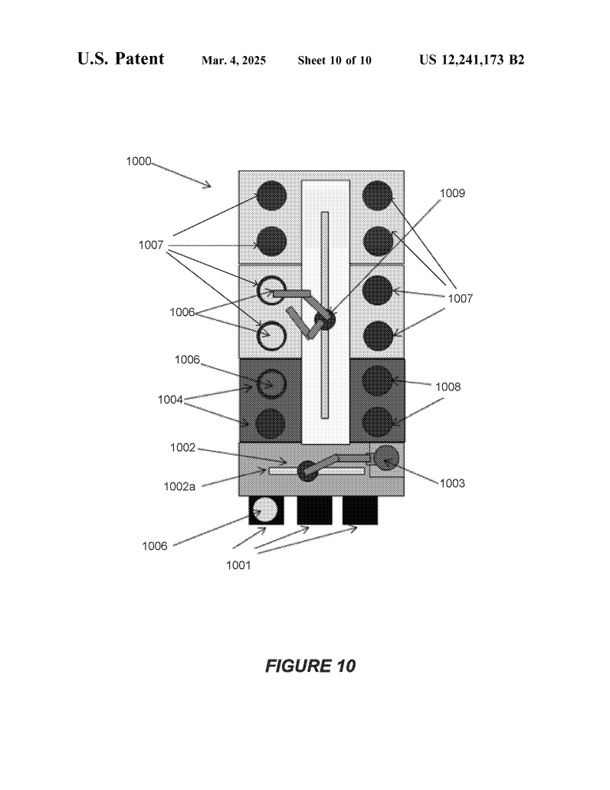整机工位布局Fig.10 / PDF 第12页前端 FOUP、前端机械手、中央转移区域和左右成对的电镀工位。正文允许上下叠层及不同工艺配置；本图只显示一层。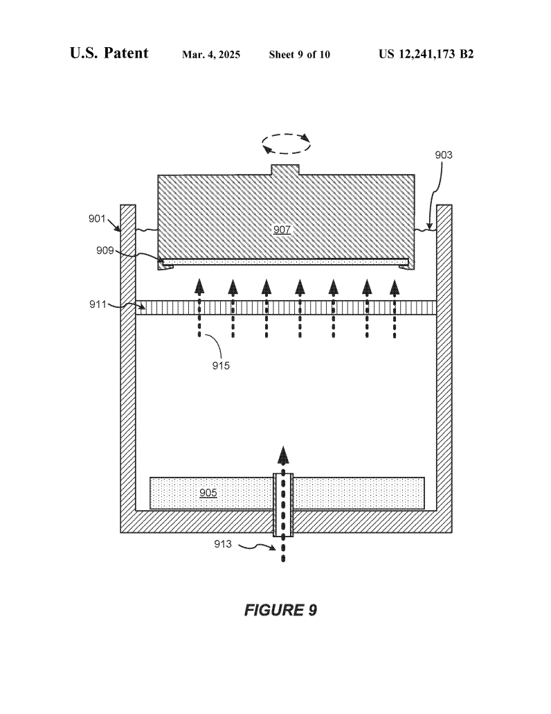面朝下单腔剖面Fig.9 / PDF 第11页901 槽体；903 电解液；905 阳极；907 旋转夹具；909 晶圆；911 离子阻性可透液元件；913 入口；915 流向。分隔膜是正文中的另一可选构件。
Lam Research / 优先权 2017-03-01 / 本版公开 2018-09-06US20180251907A1Wide lipseal for electroplating公开专利资料专利文件 · 9 页正文直接讨论 SABRE 3D、APT 后湿片及唇形密封；可用于夹持机构的形态参考。适用边界：附图为示例结构；不能据此认定所有 SABRE 3D 使用同样的密封尺寸及改型。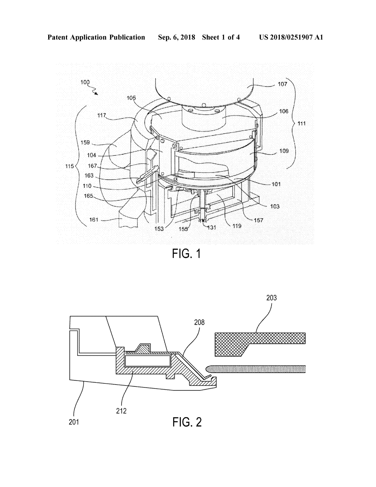夹持头与边缘接触Fig.1-2 / PDF 第2页cup / cone、主轴与驱动机构、contact fingers 和 lipseal 的位置关系。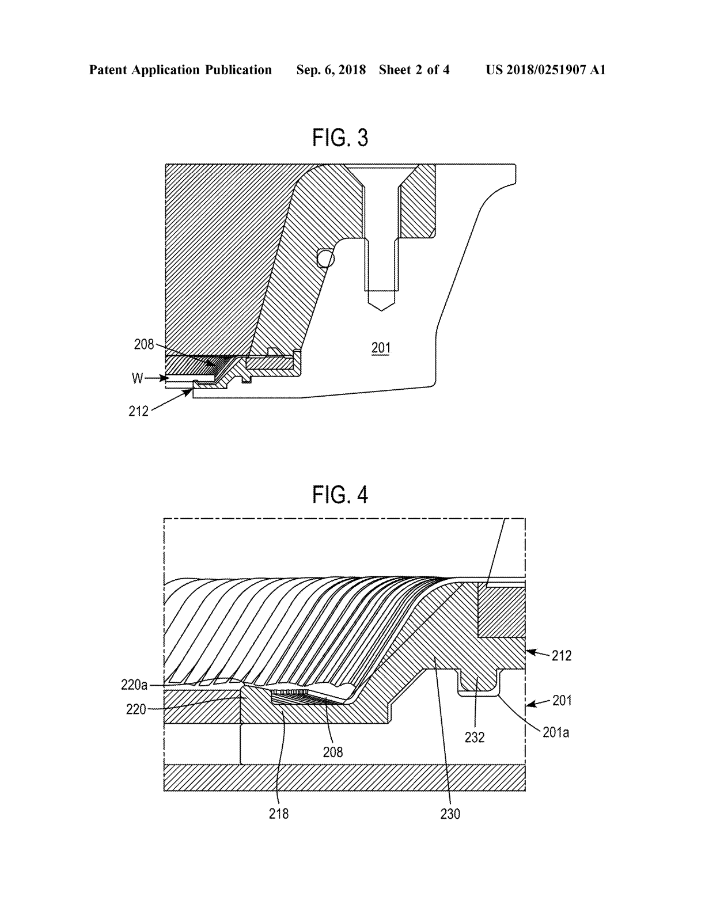接触和密封局部Fig.3-4 / PDF 第3页用于区分待镀面、电触点、杯体和弹性密封，不从示意图量取工程公差。
Lam Research / 优先权 2015-08-28 / 本版公开 2018-10-09US10094034B2Edge flow element for electroplating apparatus公开专利资料专利文件 · 60 页Lam 的详细流场和流道构件实施例；正文将 SABRE 作为面朝下喷泉式设备实例。适用边界：没有足够证据认定该 edge-flow 改型已装在特定代际 SABRE 3D 上；应作为独立的公开专利结构方案。CIRP 与膜分开建模。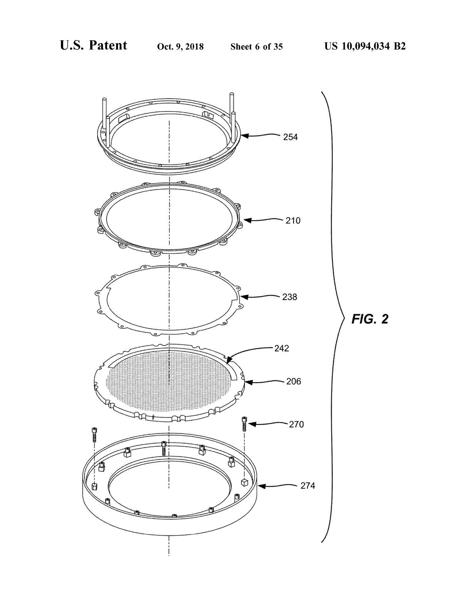流道构件爆炸图Fig.2 / PDF 第10页cup 254、confinement ring 210、gasket 238、CIRP 206、inlet showerhead 242、adjustment rods 270、membrane frame 274。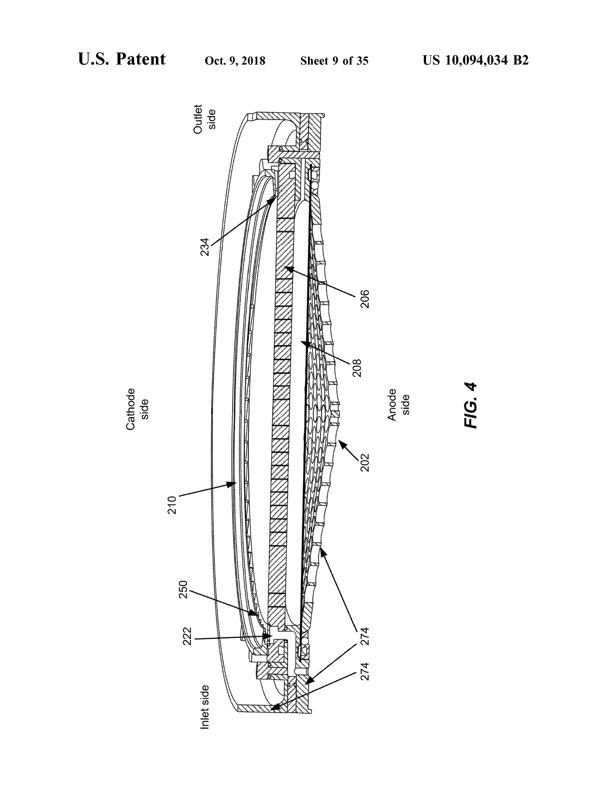横向流与下部供液剖面Fig.4 / PDF 第13页区分膜 202、CIRP 206、下部 manifold 208、侧入口和相对出口。原页横置；保留原始方向，可点击查看原图或 PDF。
Novellus Systems / 优先权 2009-06-17 / 本版公开 2017-06-13US9677188B2Electrofill vacuum plating cell公开专利资料专利文件 · 27 页Fig.13 正文直接举 SABRE 3D；可交叉核验成对工位和多层架构。适用边界：Fig.12 与 Fig.13 是不同实施例；不得拼成一张商业机的出厂结构图。真空电镀也是专利选项，不是所有 SABRE 3D 的标准状态。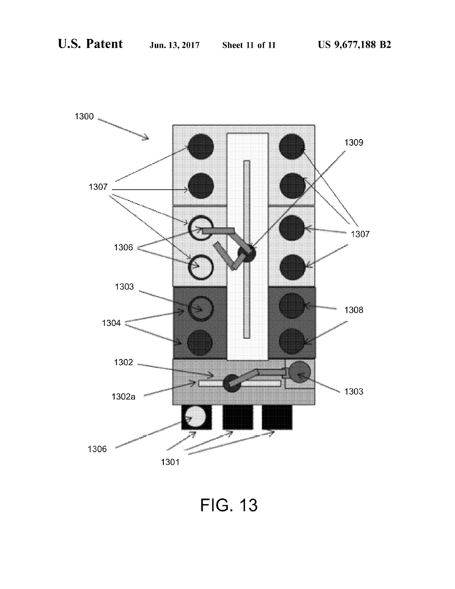单层成对工位平台Fig.13 / PDF 第15页图示四组 duet、合计八个电镀位置，前端三个 FOUP 位置。文字描述可上下叠层；八个不是所有商业配置的固定数量。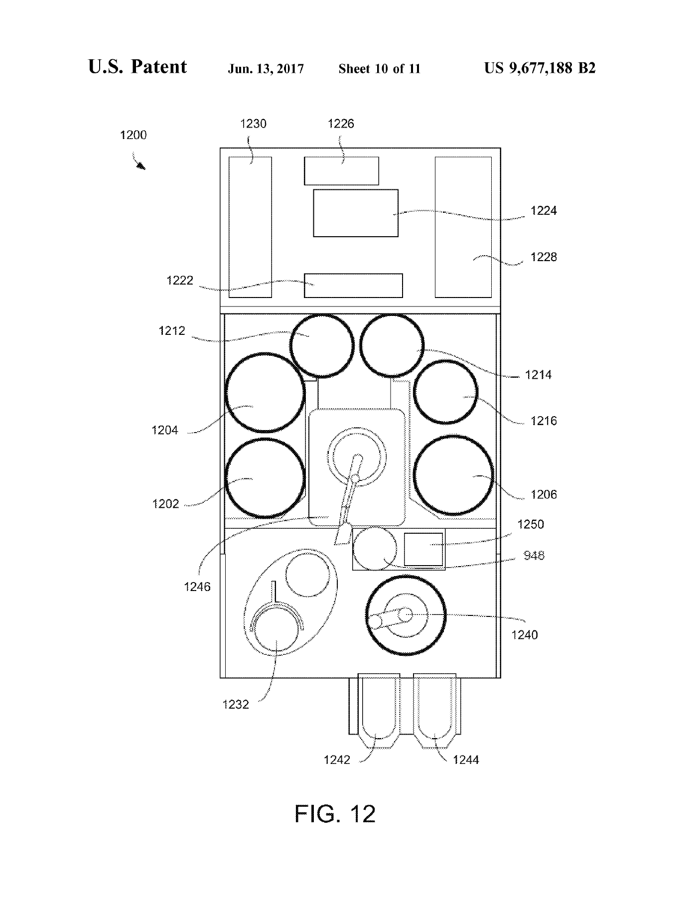另一实施例的辅助系统Fig.12 / PDF 第14页电镀与前后处理模块，以及后部药液槽、补液、稀释、过滤泵与控制区域。只作系统关系参考。
Novellus Systems / 优先权 2009-06-17 / 本版公开 2016-09-27US9455139B2Methods and apparatus for wetting pretreatment for through resist metal plating公开专利资料专利文件 · 35 页through-resist 镀前润湿及转片的机械布局参考。适用边界：并未直接把 Fig.7 指定为 SABRE 3D 出厂布局；不要据此固定工位数量。日期以原文/专利首页为准。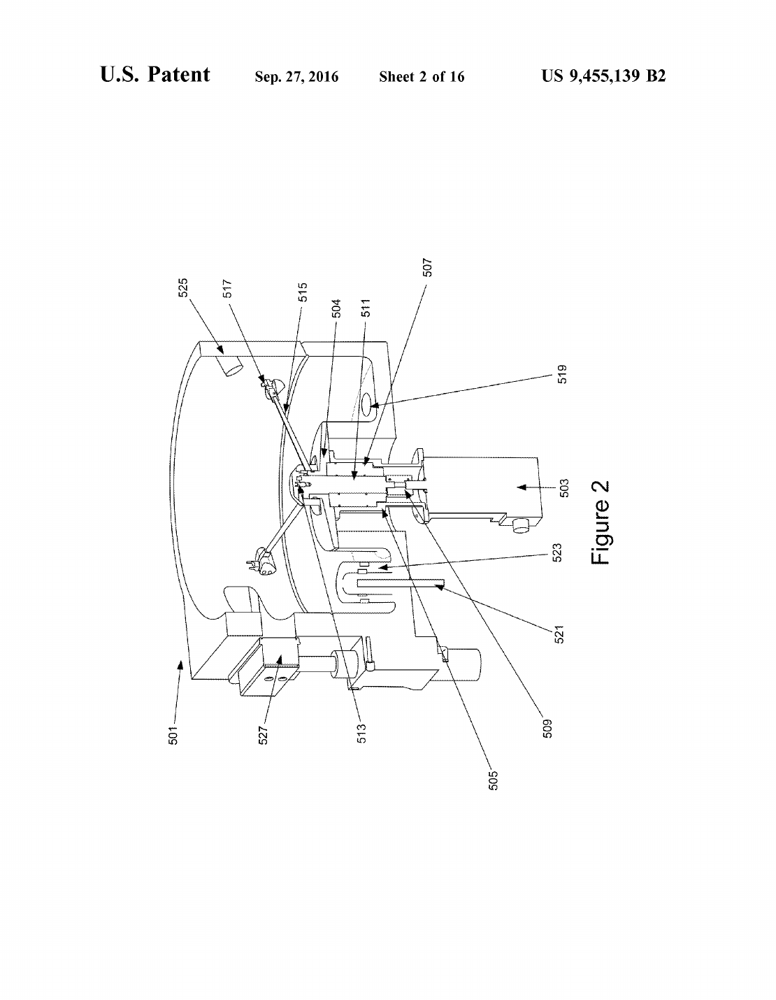预湿腔机构立体图Fig.2 / PDF 第5页旋转夹持、喷淋与腔体闭合机构，用于解释独立预湿工位；原页横置。不能把预湿朝向自动等同于正式电镀时的晶圆朝向。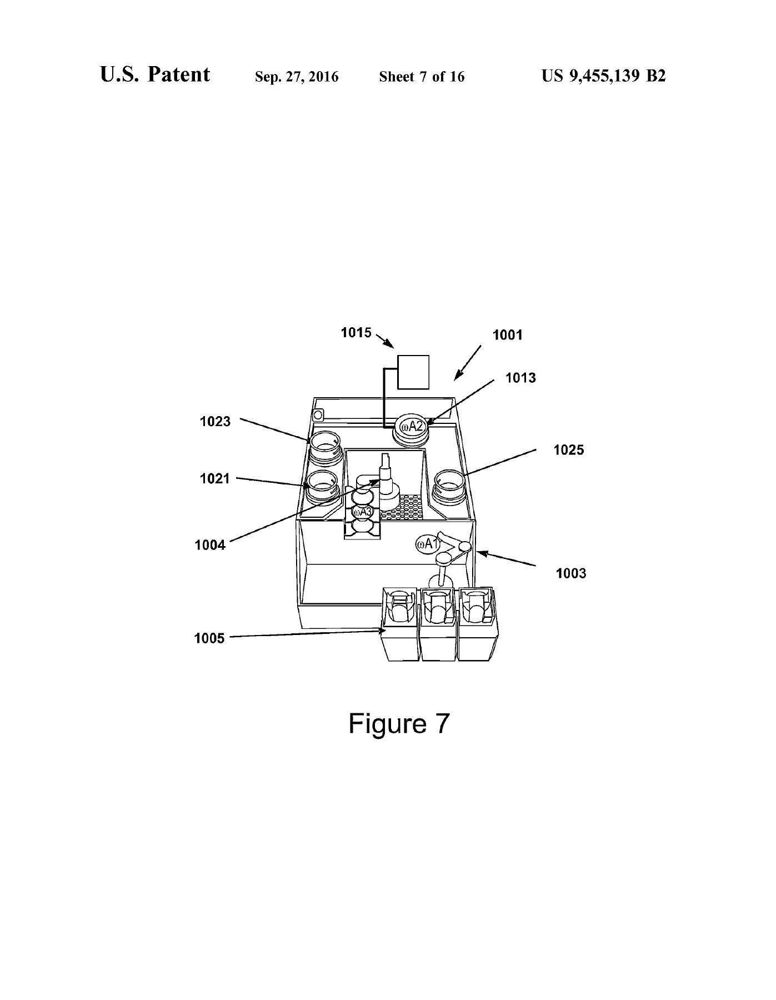预湿与干湿片交接Fig.7 / PDF 第10页FOUP、干片机械手、转移机械手、预湿模块 1013、脱气单元 1015 和多个电镀位。
Novellus Systems / 优先权 2008-08-18 / 本版公开 2010-08-12US20100200412A1Process for through silicon via filling公开专利资料专利文件 · 19 页TSV 的工艺链、填孔形貌、腔体和系统示例；正文列 SABRE 等设备为适用工具。适用边界：该专利不专属于 SABRE 3D，且实验配方/孔尺寸不可直接写成当前量产配方。Fig.4 与成对工位图是不同布局。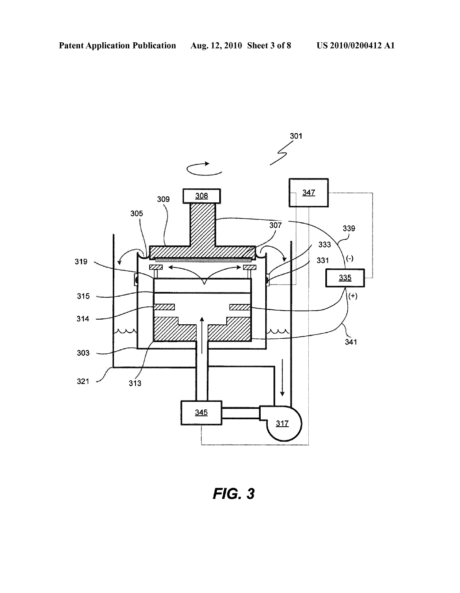TSV 电镀腔及循环Fig.3 / PDF 第4页面朝下晶圆、电极、循环、过滤及温控等的原理连接。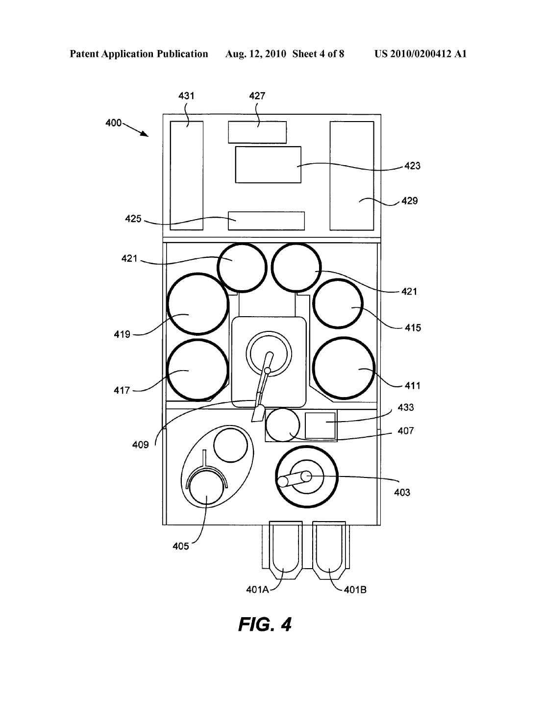TSV 系统实施例Fig.4 / PDF 第5页多个电镀位、镀后处理、搬运、药液与辅助区域。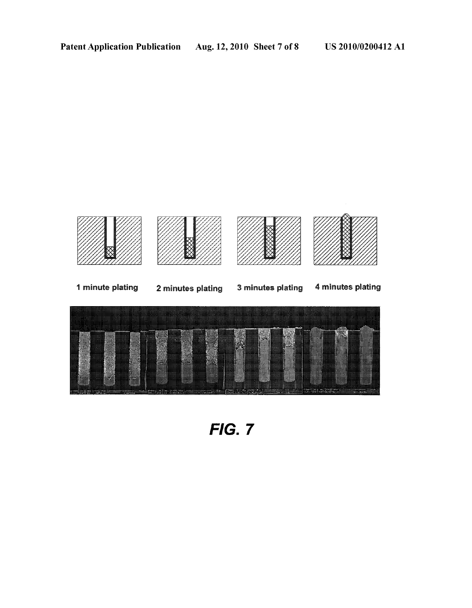TSV 填充形貌序列Fig.7 / PDF 第8页不同电镀时间的孔内沉积图。用于支持底部优先填充的微观讲解，不等同于模型自己的数值预测。
Novellus Systems / 优先权 2010-12-01 / 本版公开 2012-06-07US20120138471A1Electroplating apparatus and process for wafer level packaging公开专利资料专利文件 · 34 页WLP 中 SnAg 共沉积的阴阳极液管理；正文以 SABRE 为喷泉式系统实例。适用边界：这是锡银体系的实施例，不能把图中的锡阳极/补加系统直接当成铜 TSV 槽。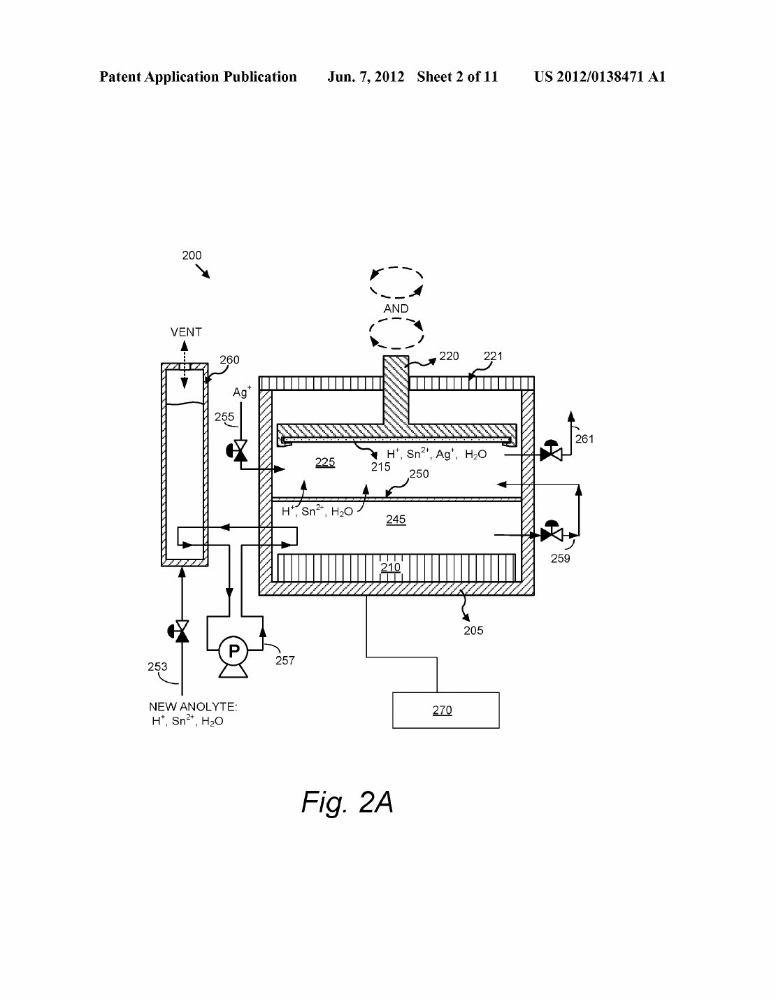WLP 锡银电镀回路Fig.2A / PDF 第3页旋转晶圆、下方锡阳极、阴/阳极液分隔、补液和回液。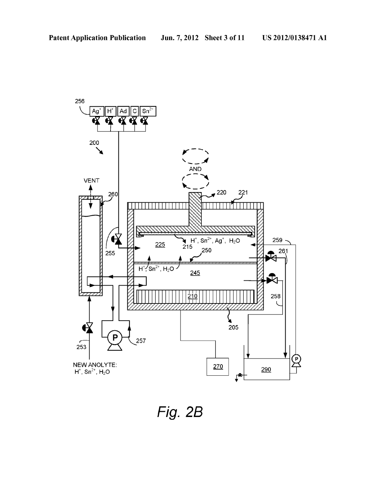另一种锡银储液方案Fig.2B / PDF 第4页与 Fig.2A 对照查看储液与流体连接的变体，不将不同回路拼成一个已证实的商品槽。